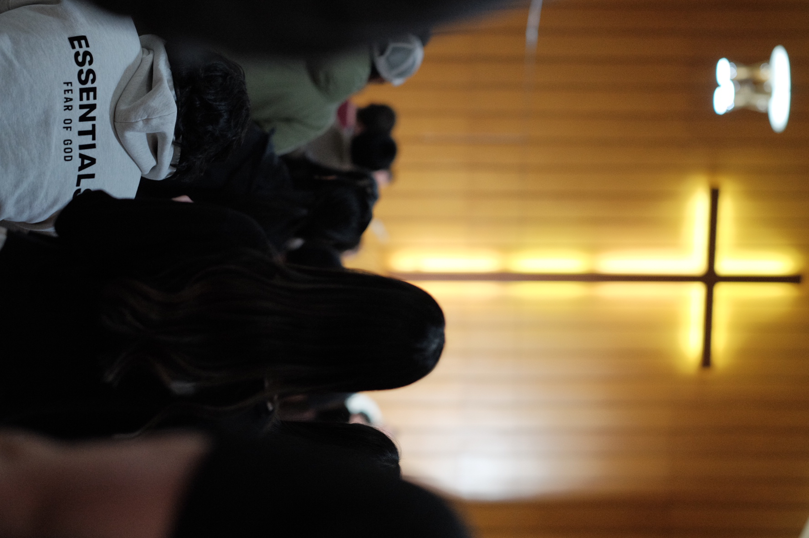
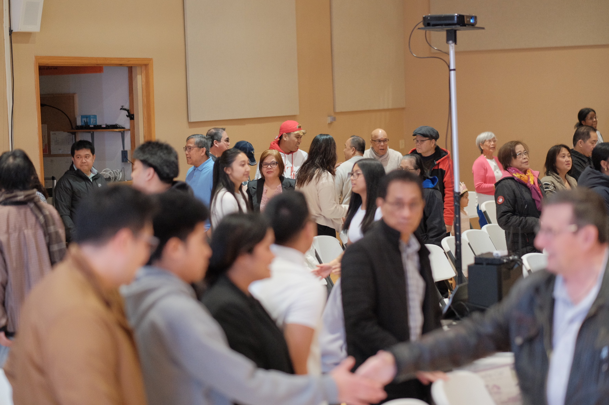
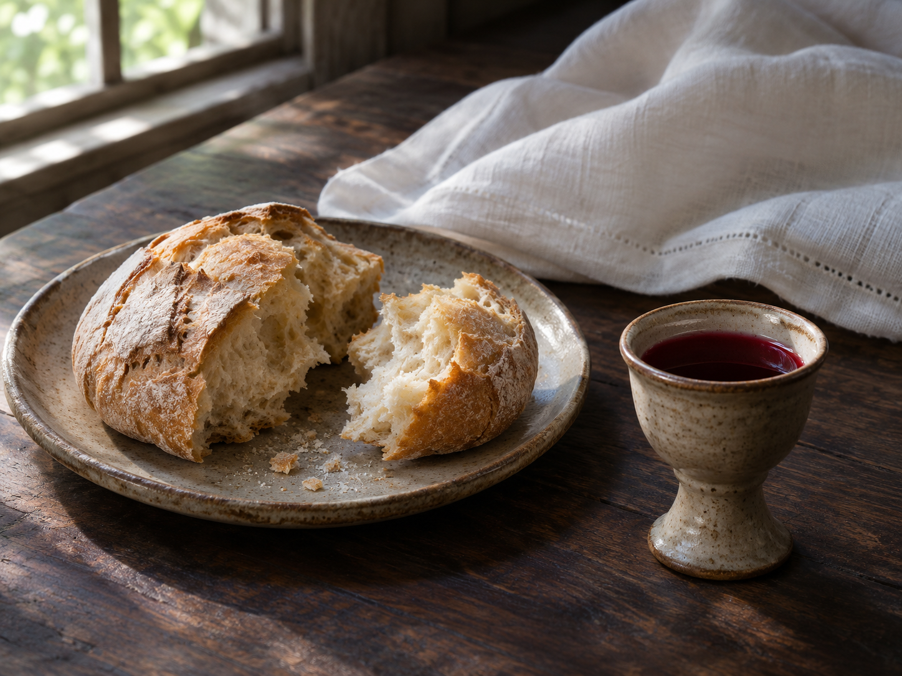
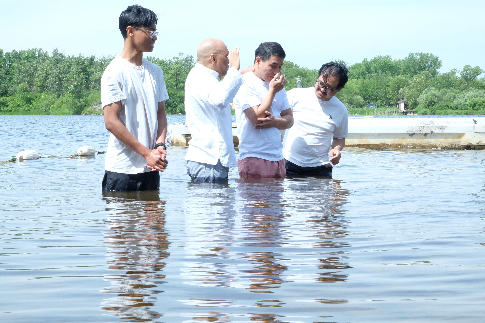

Youth & young adults
Build friendships and grow in God’s Word through Friday Youth Night, Young Adult Bible Study, and life together.
Find your communityA Christ-centered community in Winnipeg, growing in faith and sharing the love of Jesus. Wherever you are on your journey, you are welcome here.


Our heart is to glorify God, proclaim the gospel of Jesus Christ, and build up His people in truth and love.
We are a community learning to follow Jesus in everyday life. Through worship, the Word, prayer, and fellowship, we grow together and serve those around us.
There is room for you to connect, grow in faith, and walk alongside others.

Build friendships and grow in God’s Word through Friday Youth Night, Young Adult Bible Study, and life together.
Find your community
Explore the Christian faith and take your next step through Discovery Bible Study and New Believer Follow-Up.
Find your community
Share life across generations through worship, Children’s Sunday School, Bible studies, and fellowship.
Discover our ministriesRoom to reflect, updates from our church family, and opportunities to gather.
Biblical encouragement for your everyday walk with Jesus.
Explore articlesStay connected with life in the Faith Life community.
View announcementsMake time for prayer, fellowship, and growing together.
Explore gatheringsCome as you are. Whether you are exploring faith or looking for a church community, we would love to welcome you to Faith Life.
427 Matheson Avenue
Winnipeg, Manitoba R2V 3A7
Join us for Sunday worship at 1:30 PM.
Let’s plan your visit